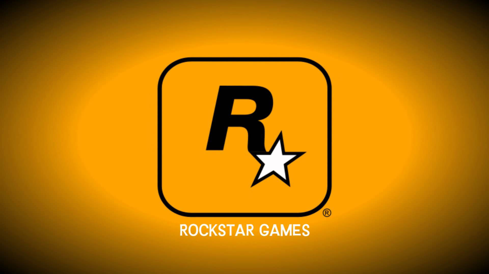
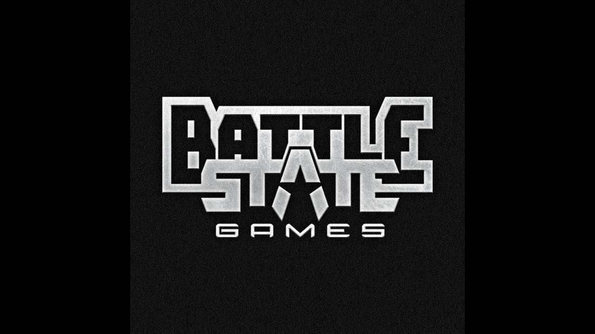

Разработчик видеоигр — это разработчик программного обеспечения, специализирующийся на разработке видеоигр — процессе и связанных с ним дисциплинах из области создания видеоигр. Разработчиком игр может быть как единственный человек, который берёт на себя все задания, так и большое предприятие с разделением обязанностей между сотрудниками по областям деятельности — программирование, дизайн, художественная составляющая, тестирование и т. д. Большинство компаний — разработчиков видеоигр имеют финансовую поддержку издателей и обычно маркетинговую поддержку. Разработчики, существующие за счёт собственных ресурсов, известны как независимые или инди-разработчики и обычно создают инди-игры.
Разработчик может специализироваться на определённой консоли (как, например, Nintendo's Wii U, Microsoft's Xbox One, Sony's PlayStation 4) или может развиваться на базе ряда систем (включая персональный компьютер). Разработчики видеоигр специализируются на определённых жанрах игр (как, например, ролевые видеоигры или шутеры от первого лица). Некоторые концентрируют свою деятельность на портировании игры из одной системы в другую, некоторые на переводе игры с одного языка на другой. Реже некоторые компании, помимо разработки игр, занимаются другими видами работ по разработке программного обеспечения.
Большинство издателей видеоигр содержат студии разработки (как, например, Electronic Arts EA Canada, Square Enix's studios, Radical Entertainment, Nintendo EAD, принадлежащие Sony Polyphony Digital и Naughty Dog). Однако, так как процесс издания для них является основной деятельностью, они, как правило, называются скорее «издателями», чем «разработчиками». Разработчики могут быть также и частными (например, Bungie — компания, которая создала серию Halo эксклюзивно для Xbox).
Горы Швейцарии

